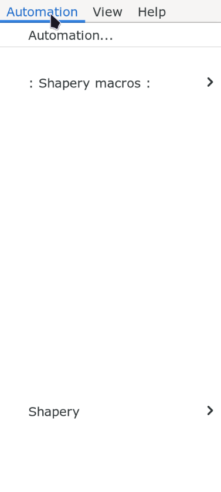
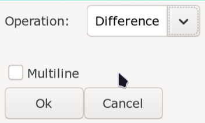

Masking
You have already learned about what shape or mask is in previous lesson. We even learned the relationship between clips and shapes. In this page, we learn about how to use an automation script to create mask.
Shapery

The script we use is called Shapery so download it from Dependency Control.
Shapery is an script for all things related to Shapes. Shapery has a lot of sub-menus.
We will run out of keys if we bind them all to hotkey so we will use it from the
Automation menu itself but if you find yourself using a sub-menu a lot, you can
bind it to hotkey.
When you install Shapery, it will make two entries in the Automation menu:
: Shapery Macros : and Shapery. Both of these have sub-menus and we will
talk about the sub-menus that I find the most useful.
Shapery Macros
Clip to Shape

Nichijou Episode 5: 0:21:10
Signs like this is where we apply mask. We can cover the box with a black mask and put the text over it. Follow the steps below to convert clip to shape:
- Draw a clip (rectangular or vectorial).
- Go to
Automation -> : Shapery Macros : -> Clip to Shape. - Open
Edit Tagsand make necessary changes (color, border, opacity etc) - Put text over it.

Kaguya-sama: Love is War Episode 1: 0:06:50
The Japanese text here is unfortunately vertical. While kanji may be read vertically, English text is not meant to be read vertically. This is why we will not mask over the original text. We can instead put the mask above the box.
Shape to Clip
Since we can convert a clip to shape, we can do the reverse as well. The main reason why we would want to do this is to convert the shape to clip and change the coordinates of the clip using Aegisub tool and reconvert it back to shape.
Another reason would be to convert the shape to clip and use this clip in other lines. This way other lines will be clipped inside the shape.
Although the name says Shape to Clip, if you have a text and run this the text
will directly be converted to clip.
Shape Clipper
If a shape has clip, then this menu removes the portion of the shape that the clip tag removed which means the clip tag is no longer used but its appearance remains unchanged.
So what is the use of this menu if it removes already invisible portion of shape? If you remember past lesson, clip creates hard edges that even the blur tag does not fix. Removing clips this way is one of the ways of solving this problem.
If you run this in the line with text, the shape is first converted to shape and then that shape is clipped.
Shape Expand
Shape Expand bakes in as much tag as it can like scale, perspective etc into the shape itself. Think of it like the shape uses the least amount of tags but keeps the original appearance of the shape.
If you run this in a line with text, it just converts it to shape. This is the recommended way to convert text to shape.
Shape Merge
You can select the multiple lines with shapes and running this menu will merge all these shapes into one line.
Warning
This method is just taking the drawing commands and appending it to a single line. If you want to merge all the shapes into a single shape, there is another method below.
Shape to 0,0
This will keep the appearance of the shape but change the position of the shape
to (0,0).
Shape to Center
This will keep the appearance of the shape but change the position of the shape to the center of the bounding box of the shape.
Shape to Origin
This will keep the appearance of the shape but change the position of the shape to the origin of the shape.
Shape trim
If you select multiple lines and run this menu, it will remove all the portion of the lower shape that has been covered by shape above it. It does not seem to respect the layers. It will trim with respect to the last line in selection.
Shapery Sub-Menus
Manipulate

There are two things you can do in Manipulate: simplify the drawing command or
flattening the drawing command. Both of these are used to clean up the drawing
commands.
Flattening means converting a complex path which is made up of numerous bézier curves into a series of small straight line segments.
Simplifying means reducing the number of points or segments in the drawing command while keeping the original appearance of the shape.
The variables of simplify:
| Variable | Meaning |
|---|---|
| Tolerance | How far the simplified shape is allowed to deviate from the original shape If deviation of a point is more than tolerance, point is not simplified |
| Angle Threshold | How much can a curve be simplified to a straight line |
So higher the value of the variables, the more the shape changes due to simplification. The lower the tolerance, the less simplification occurs.
The variables of flatten:
| Variable | Meaning |
|---|---|
| Distance | Maximum distance between curve and the approximated straight segments |
So higher the distance, the coarser the approximation is but has lesser line segments. The lower the distance, more detailed the approximation is but also has more line segments.
In the GUI, if Fit Curves is enabled, the script will try to approximate the
curve for it while simplifying else it will use line segments.
If Execute On \clip is enabled, the simplification or flattening will be
executed on the clip of the line not the shape.
Offsetting
Offsetting is used to expand or contract the shape.
- Go to
Automation -> Shapery -> Offsetting. - In the GUI, set the stroke weight to a positive value to expand and negative value to contract the shape.
-
In the corners style, select how sharp the corner is after offsetting:
Corner Sytle Meaning Miter Sharp, pointy and angled corner Round Curved corner Square Flat and squared corner -
Strokehere refers to border. Align stroke tells the script where the border should be placed relative to shape.Align Stroke Meaning Center Border is centerd on path i.e. half of border covers shape, half is outside the shape Outside Border is completely outside the shape Inside Border is completely inside the shape -
Miter Limitdetermines the maximum allowed sharpness before switching to a flat bevel corner Arc Precisiondetermines how accurately offsetted curves are approximated with straight lines. (Higher precision means use more line segments means smoother curve)
Pathfinder

This menu provides a way to perform boolean operation on shapes. You either add clip to a line and operate between the drawing command of clip and drawing command of shape.
Or you select multiple lines, click on Multiline and operate on the drawing
commands of all the lines.
In the dropdown, you will find four options:
Unite
Combining all shapes into one shape.
| Mode | Operation |
|---|---|
| Single Line Mode | Combines the shape with its clip |
| Multi Line Mode | Shapes of all lines is combined into one |
This is the alternative to shape merge as mentioned above.
Intersect
Keeping region shared by all shapes.
| Mode | Operation |
|---|---|
| Single Line Mode | Keeps the region overlapping between shape of a line and clip |
| Multi Line Mode | Keeps the region overlapping between shapes of all lines |
Difference
Think of carving out a piece from a shape.
| Mode | Operation |
|---|---|
| Single Line Mode | Removes the region that is covered by clip |
| Multi Line Mode | Removes the region in the first shape that overlaps with all the other shapes Does not seem to respect the layers |
Exclude
This is inverse of Intersect i.e. removing region shared by all shapes.
| Mode | Operation |
|---|---|
| Single Line Mode | Removes the region overlapping between shape of a line and clip |
| Multi Line Mode | Removes the region overlapping between shapes of all lines |
Masks with fades
Signs that have fades is difficult to mask because during the fade, the original text underneath will be visible. So how do we deal with such signs?
Don't use mask
One thing you could do is of course not to use mask. Put the text outside the sign somewhere and fade it like usual.
TODO: Add example
Just use fade
Add the fade like normal and see if it looks bad or not. In cases when the fade is short, the problem of original text being visible might not even exist.
TODO: Add example
Shorten the fade
You could also shorten the duration of fade. Do this and check if the shortened fade looks off or not.
TODO: Add example
Extend the duration of the sign
You could make the sign start earlier and add fade in or make the sign end later and add fade out such that the fade in and fade out occurs when original sign does not even exist in the background while the sign is opaque during the original fade.
TODO: Add example
Animate the color
Keep the mask fully opaque and animate the color instead. This works well for signs that fade to or from a color, or signs that appear over a background that's largely a single color.
TODO: Add example
Recreate the background
This is of course not always easy and the results are not always satisfactory. Not to mention, it takes long time.
I had to work in this sign:
I chose to recreate the background for this sign since the fade is quite short.
The background also moves so this added another layer of complexity. So I chose
to recreate a big background, clip it and then use \move tag to move the
background since the movement was linear. Then I created the white mask over it.
I added the background but only during the duration of fade.
Then I added the white mask throughout the duration of the line.
Then I finally added a text with fade.
Multiple Drawing Commands
A single drawing command starts with the command m and ends only when the next
m command is encountered. Aegisub's tools only allow you to draw a single
drawing command so if you want to draw multiple drawing commands, you'd have to
do it manually by typing.
You could of course draw multiple shapes in multiple lines and merge them as I
demonstrated above. However, there is a better way. We will be using a script
called New Clip Shape by petzku. As soon as you install it from Dependency
Control, bind it to a hotkey but not in Subtitle Grid section but in Video
section. This is because as we are drawing clip, we want to press this hotkey to
start a new shape. I personally bind it to letter n in Video section.
- Draw the first shape normally using clip.
- After you draw the first shape, draw the first point of next shape. It will look odd since the last point of the first shape and first point of new shape are connected
- Press the hotkey that runs the script
New Clip Shape. This will disconnect the last point of the first shape and first point of new shape. All this is doing is insertingmbefore the last coordinate. - Continue drawing the second shape.
- Repeat.
Masks with Hole
If you want to draw masks with hole, you could again use Shapery like I demonstrated above or you could draw the clip in such a way that creates holes. You could draw the clip in clockwise direction or anti-clockwise direction. Most of the time, it would not make much of a difference but if you draw shapes in the same line in opposite direction, it will create a hole in the shape.
You could start drawing clockwise and then draw an anti-clockwise hole or vice versa.

Hoshikuzu Telepath Episode 06: 00:09:35
Take this example. When you draw the shape above, you would cover the notes as well. When you draw the clip here, you can at the same time draw the holes too. I'm doing sloppy job drawing clips. Please be better than me when you are actually typesetting.